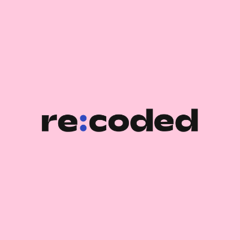

Backend Bootcamp - Re:Coded

Re:Coded prepares youth for the future of work by equipping them with the technical and soft skills (such as teamwork and business communication) to thrive as web developers and designers. Immersive bootcamps are highly competitive, with a 5% acceptance rate
Completing a five-month immersive coding bootcamp, with 400+ hours of curricula and project-based learning
Topics Include Javascript, Node.js, Typescript, Database Technologies, CRUD and Data Models, Authentication and Security, Testing, Architecture, and Cloud.
Co-creating various responsive web applications from scratch.
Skills: Docker Products · TypeScript · Node.js · MongoDB · MySQL · SQL · Web Applications · Back-End Web Development · JavaScript · Responsive Web Design · REST APIs · Object-Oriented Programming (OOP) · Teamwork · Git · GitHub · Software Development
CS50x: Introduction to Computer Science, Harvard University
Completed CS50x, an online course offered by Harvard University that covers the fundamentals of computer science, including algorithms, data structures, programming languages, and more. Throughout the course, I gained hands-on experience by working on a variety of projects, including a personal website and a program that uses machine learning to predict the sentiment of movie reviews. By completing CS50x, I developed a strong foundation in computer science and programming that I can apply to future projects and opportunities
Skills: C (Programming Language) · Python (Programming Language) · Flask · SQL · HTML · Cascading Style Sheets (CSS) · Jinja · JavaScript · Object-Oriented Programming (OOP)
Gazi University English Language Teaching
Graduated with a GPA of 3.50 from Gazi University, home to one of the country's premier English Language Teaching (ELT) departments. This esteemed institution provided me with a solid foundation in language, pedagogy, and effective communication. My education here has been instrumental in my professional journey.
Skills: Effective Communication · Critical Thinking · English Language Skills · Problem Solving · Cultural Sensitivity